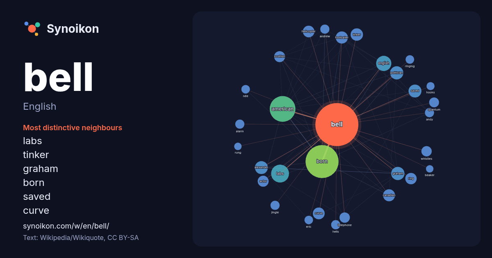

English · word of the day list
bell
The words found around it in 1979 instances from English Wikipedia, Wikiquote and Hacker News.

Most distinctive neighbours
- labs 66×
- tinker 34×
- graham 32×
- born 31×
- saved 31×
- curve 26×
- helicopter 24×
- whistles 23×
- alexander 22×
- politician 21×
- telephone 20×
- american 20×
- quantum 19×
- jingle 19×
- footballer 18×
- ring 18×
- alarm 18×
- ringing 17×
- hells 16×
- scottish 16×
× = how many times more often than in general English Wikipedia text.
Most frequent neighbours
- born 236
- american 143
- labs 69
- english 50
- british 47
- john 45
- graham 38
- politician 38
- alexander 36
- saved 36
- football 33
- tinker 33
- australian 32
- footballer 32
- canadian 31
- curve 30
- helicopter 29
- ring 28
- canada 27
- states 27
In context
- A bell /ˈbɛl/ () is a directly struck idiophone percussion instrument. Most bells have the shape of a hollow cup that—when struck—vibrates in a single Wikipedia snippets · Bell
- Saved by the Bell is an American television teen sitcom created by Sam Bobrick for NBC. The series was produced by Peter Engel Productions and NBC Productions Wikipedia snippets · Saved by the Bell
- Kristen Anne Bell (born July 18, 1980) is an American actress and singer. Her work includes both film and television, and her accolades include two Emmy Wikipedia snippets · Kristen Bell
- Jared Drake Bell (born June 27, 1986) is an American actor and musician. Born in Newport Beach, California, he began his career as a child actor in the Wikipedia snippets · Drake Bell
- Le'Veon Andrew Bell Sr. (/ˈleɪviɒn/ LAY-vee-on; born February 18, 1992) is an American professional boxer and former football running back. He played college Wikipedia snippets · Le'Veon Bell
- The Bell may refer to: The Bell (magazine), an Irish literary magazine 1940–1954 The Bell (novel), by Iris Murdoch, 1958 "The Bell", a poem by Ralph Waldo Wikipedia snippets · The Bell
- Alexander Graham Bell (/ˈɡreɪ.əm/ ; born Alexander Bell; March 3, 1847 – August 2, 1922) was a Scottish-born Canadian-American inventor, scientist, and Wikipedia snippets · Alexander Graham Bell
- Bells may refer to: Bell, a musical instrument Bells (album), by Albert Ayler, 1965 "Bells", a song by Wikipedia snippets · Bells
More English words
- art
- autumn
- bread
- bridge
- cat
- city
- climate
- clock
- death
- desert
- dog
- family
- food
- forest
- garden
- god
- gold
- health
- heart
- history
- honey
- horse
- island
- language
- life
- map
- mirror
- money
- mother
- mountain
- nature
- power
- rain
- road
- salt
- science
- shadow
- silence
- song
- star
- storm
- summer
- tea
- time
- train
- truth
- water
- winter
- work
Precomputed on 2026-10-09 with default settings (±5 words, medium corpus). The interactive map can refresh it with live data.